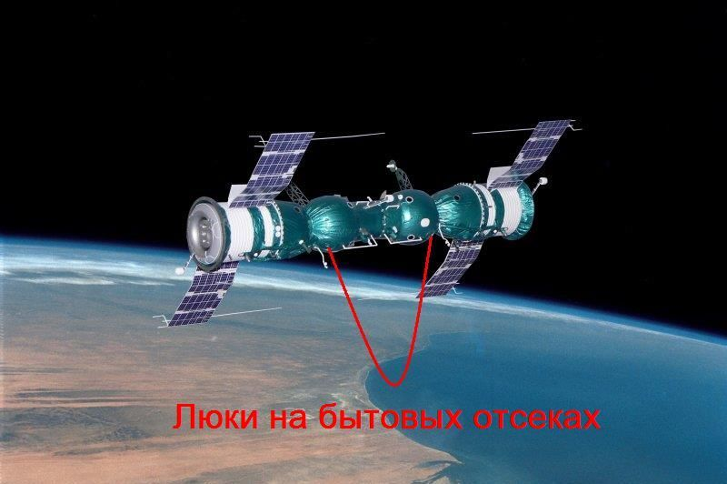

«Байкалы» идут к «Амуру»
Читается подряд. Нажми на удар — откроется подробный разбор с источниками.
14 января 1969 года с Байконура стартовал «Союз-4» — в одиночку. Пилотировал его Владимир Шаталов, позывной «Амур».Узнать подробнееСвернуть
Это был первый одиночный пилотируемый старт нового корабля — он должен был встретить второй корабль, который полетит на следующий день, и состыковаться с ним на орбите.
Источники: Музей Первого полёта (museumgagarin.ru), «Январь 1969 года…»; Государственный музей истории космонавтики, Калуга (gmik.ru).
На следующий день, 15 января, стартовал «Союз-5» — сразу с тремя космонавтами. Общий позывной экипажа — «Байкалы».Узнать подробнееСвернуть
Командир корабля — Борис Волынов, бортинженер — Алексей Елисеев, инженер-исследователь — Евгений Хрунов. Экипажу предстояло разделиться: двое должны были перейти на «Союз-4», один — вернуться на Землю в одиночку.
Источники: РГАНТД («Первая в мире стыковка космических кораблей»); Музей Первого полёта.
16 января в 08:20 UTC корабли состыковались вручную — впервые в мире состыковались два пилотируемых корабля.Узнать подробнееСвернуть
Активную роль играл «Союз-4»: именно в его стыковочном узле стояли штырь и активная радиоэлектроника системы сближения. По словам Бориса Волынова, сближение шло поэтапно: остановились на ста метрах, потом на тридцати — и «зависли», ожидая, пока место встречи окажется в зоне видимости советских наземных станций слежения: перед стартом экипажам прямо сказали «сделайте так, чтобы это увидел весь мир».
Источники: Музей Первого полёта; Калужский музей космонавтики; «Российская газета», интервью Б. В. Волынова, 15.01.2019.
Переходного люка между кораблями ещё не придумали — поэтому из «Союза-5» в «Союз-4» Елисеев и Хрунов перебирались через открытый космос: узел «Контакт» умел только механически соединить корабли, но не превращал их в один герметичный объём.Узнать подробнееСвернуть
Находка дняВнутренний люк для перехода экипажа к этому полёту просто не успели спроектировать — конструкторы ограничились надёжной механической и электрической стыковкой. По свидетельствам историков космонавтики, инженер Константин Феоктистов предложил более быстрый обходной путь: одеть переходящих космонавтов в новые скафандры и пустить их по обшивке через открытый космос.
Источники: Drew Ex Machina, «Soyuz 4 & 5: The First Crew Exchange in Space»; RussianSpaceWeb.com.
Алексей Елисеев и Евгений Хрунов впервые в мире перешли из одного корабля в другой через открытый космос — в новых скафандрах «Ястреб».Узнать подробнееСвернуть

Схема состыкованных кораблей: переход экипажа шёл через стыковочный и орбитальный отсеки, минуя спускаемый аппарат. Wikimedia Commons, CC BY-SA 3.0 (Lunokhod 2). Перед выходом Борис Волынов задраил люк спускаемого аппарата, стравил давление в орбитальном отсеке и следил за медицинскими показаниями товарищей по приборам. Когда люк наружу пошёл, пульс и давление у обоих подскочили — «как будто они пробежали стометровку», вспоминал потом Волынов.
Источники: «Российская газета», интервью Б. В. Волынова; РГАНТД.
Переход занял 37 минут — мировой рекорд одновременного пребывания двух космонавтов вне корабля.Узнать подробнееСвернуть
Рекорд зафиксирован в архивном «рекордном деле» о групповом полёте: РГАНТД, фонд Федерации космонавтики СССР, Ф. 24, Оп. 1-1, Д. 90, Л. 15.
Источник: РГАНТД.
Пока корабли были состыкованы — 4 часа 33 минуты 49 секунд — в космосе существовала первая в мире экспериментальная орбитальная станция с четырьмя космонавтами на борту.Узнать подробнееСвернуть
Это тоже мировой рекорд — по продолжительности и суммарной массе состыкованных пилотируемых кораблей (РГАНТД, Ф. 24, Оп. 1-1, Д. 90, Л. 13).
Источники: РГАНТД; Калужский музей космонавтики («более четырёх часов работали советские космонавты…»).
Евгений Хрунов стал первым в мире «космическим почтальоном»: он передал Шаталову письма, телеграммы и газеты, которых не было на борту «Союза-4» в день его старта.Узнать подробнееСвернуть
«Союз-5» стартовал на сутки позже и успел захватить более свежую почту с Земли. По словам Волынова, для такой почты даже сделали специальный штемпель «Земля — Космос».
Источники: РГАНТД; «Российская газета», интервью Б. В. Волынова.
Пока ждал стыковки, командир Шаталов опробовал незапланированный программой способ одновременной ориентации корабля на Солнце и на Землю — сегодня его называют «методом Шаталова».Узнать подробнееСвернуть
Метод вошёл в практику последующих орбитальных полётов как способ экономить топливо ориентации, не теряя связь с Землёй и энергию от Солнца одновременно.
Источник: РГАНТД.
17 января экипаж «Союза-4» — Шаталов, Елисеев и Хрунов — вернулся на Землю. Командир «Союза-5» Борис Волынов приземлился уже один, на сутки позже.Узнать подробнееСвернуть
Разделение экипажей на два разных корабля при возвращении было частью замысла полёта: ровно так же, по проекту, единственный космонавт должен был в одиночку возвращаться с орбиты Луны.
Источники: РГАНТД; Музей Первого полёта.
Спуск Волынова едва не закончился трагически: приборный агрегат вовремя не отделился, и корабль неуправляемо закувыркался при входе в атмосферу.Узнать подробнееСвернуть
«Голова — ноги, голова — ноги…» — так вспоминал вращение корабля сам Волынов. В иллюминаторе — розовые жгуты раскалённого газа и плазма, металл обшивки на глазах становился мягким, будто тряпка. Связь с Землёй пропала: сгорели антенны. Отсеки разошлись только тогда, когда от перегрева взорвались баки с остатками топлива — после взрыва спускаемый аппарат наконец отделился, но уже без всякой ориентации.
Источник: «Российская газета», интервью Б. В. Волынова, 15.01.2019.
Корабль спускался неуправляемо и вращаясь, но парашют всё же раскрылся. При жёсткой посадке южнее Кустаная Волынов сломал зубы — и выжил.Узнать подробнееСвернуть
Это был аварийный баллистический спуск. При ударе магнитофон, писавший параметры полёта, сорвало с крепления и пролетело мимо ног космонавта; Волынов получил перелом костей зубов и позже лечился в госпитале им. Бурденко.
Источник: «Российская газета», интервью Б. В. Волынова.
Указом Президиума Верховного Совета СССР от 22 января 1969 года все четверо участников полёта стали Героями Советского Союза.Узнать подробнееСвернуть
Шаталов, Волынов, Елисеев и Хрунов получили ордена Ленина, медали «Золотая Звезда» и звания «Лётчик-космонавт СССР».
Источник: РГАНТД.
Стыковка и переход через открытый космос репетировали ровно ту операцию, которую требовала советская лунная программа.Узнать подробнееСвернуть
По проекту Л3 единственный космонавт должен был взлететь с поверхности Луны в лунном корабле, состыковаться с орбитальным кораблём на окололунной орбите — и перейти в него тем же способом, через открытый космос: внутреннего люка не было и там.
Источники: Drew Ex Machina; RussianSpaceWeb.com.